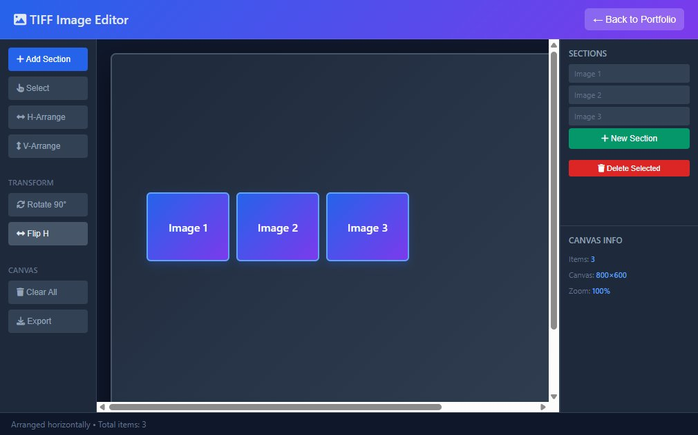

01 / Research tooling / Sole developer
TIFF Image Editor
A specialist tool for arranging very large scans and reconstructing damaged papyri.

- The problem
- The research workflow needed suitable software to work with very large image files and automatically arrange them for papyrus reconstruction.
- My contribution
- I was the sole developer, building the editor and its image arrangement, stitching and precision measurement tools in Python.
- Technical trade-off
- Large source files make interactive navigation costly. The documented design uses reduced-resolution image previews for navigation, while keeping original-resolution data for export: responsiveness without sacrificing output detail.
- The result
- The project received the EU Seal of Excellence, recognising its quality. It did not receive funding because funds were unavailable.
- Python
- Pillow
- Tkinter
- PyInstaller